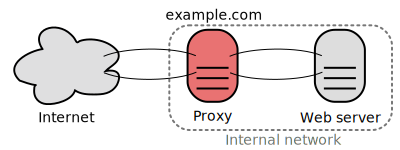
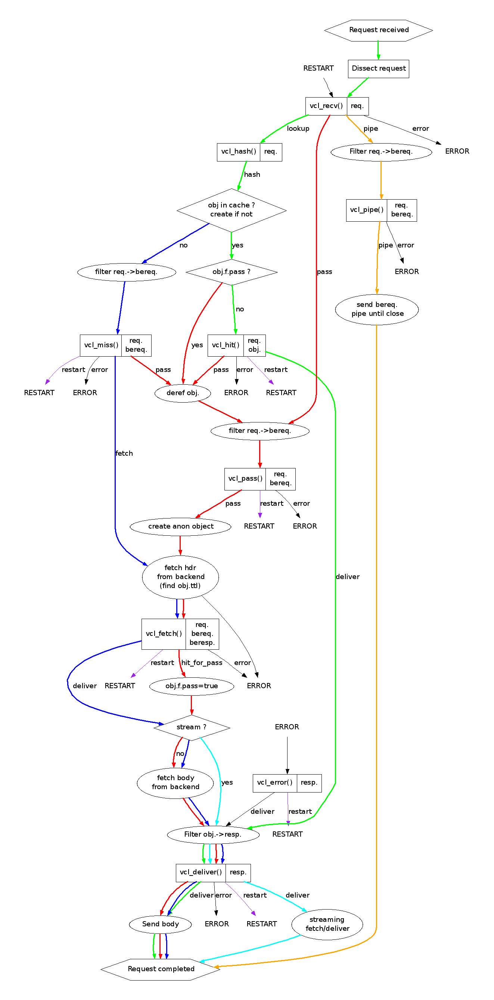

HTTP Cache
AFSY - sfPot Mai 2014
Joel Wurtz / @joelwurtz
Cache
Cache
Un cache réduit le coût des ressources.
Faux
Cache
Un cache transforme le coût des ressources.
On réduit le calcul mais on augmente le stockage.
HTTP Cache
Reverse Proxy
Cache control
- Cache-Control: public
- Cache-Control: private
- Cache-Control: max-age=3600
- Cache-Control: s-maxage=900
- Expires: Thu, 22 May 2014 10:00:00 GMT
Cache validation
Response
- Last-Modified: Thu, 22 May 2014 10:00:00 GMT
- ETag: 1121029380192
Cache validation
Request
- If-Modified-Since: Thu, 22 May 2014 10:00:00 GMT
- If-None-Match: 1121029380192
Vary
- Vary: Accept-Encoding, User-Agent
HTTP Cache + Symfony = <3
Support de la norme HTTP
Symfony
$response->setPublic();
$response->setPrivate();
$response->setMaxAge(600);
$response->setSharedMaxAge(600);
$response->setExpires(new \DateTime());
Symfony
$response->setLastModified(new \DateTime());
// Ou
$response->setETag("1121029380192");
if ($response->isNotModified($request)) {
return $response;
}
Symfony
$response->setVary('User-Agent');
Symfony Reverse Proxy
$kernel = new AppCache($kernel);
Symfony Reverse Proxy
Suffisant, mais pas très performant (~20-40ms).
Varnish + Symfony
La bonne nouvelle est qu'il est très simple de passer d'un proxy à un autre sans qu'aucune modification ne soit nécessaire dans le code.
Varnish
apt-get update
apt-get install varnish
WTF? WTF? WTF?!
- Rien n'est mis en cache
- Tout est mis en cache
- Cache mélangé entre utilisateurs
Varnish != Symfony2 Reverse Proxy
Varnish
Norme HTTP ?
Comportement par défaut de Varnish
- Cache uniquement sur les requêtes GET / HEAD
- Cookie = pas de cache
- Set-Cookie = pas de cache
- "Cache-Control: no-cache" = cache
- "Cache-Control: private" = cache
Varnish VCL
{kind=link}
Varnish VCL
- vcl_recv: point d'entrée
- vcl_hash: determine un hash pour la requête
- vcl_miss: pas de cache
- vcl_hit: cache disponible
- vcl_pass: requête au backend (symfony)
- vcl_fetch: réponse disponible
- vcl_deliver: délivre la réponse au client (cache ou non)
Un peu plus loin avec varnish
Cache busting
- Mettre un temps de vie très long sur les assets
- Ajouter "?version" aux liens des assets
Grace mode
- Plusieurs requêtes sur une url
- La première est envoyé au backend
- Les autres attendent
Grace mode
- Le temps d'attente peut être long si le backend est lent
- Très fort trafique = monté en flêche du load
Grace mode
Au lieu d'attendre le nouveau cache on peut envoyer l'ancien = Grace mode
Grace mode
Ne pas supprimer la réponse du cache si il n'est plus valide avant 10min
sub vcl_fetch {
set beresp.grace = 10m;
}
Grace mode
On peut utiliser l'ancien cache pour cette requête pendant 10 min
sub vcl_recv {
set req.grace = 10m;
}
Saint mode
Objectif: servir du cache si on obtient une erreur 500
Saint mode
- Met une url pour un backend en blacklist pendant X temps
- Va essayer d'autre backend d'abord
- Si aucun disponible envoie l'ancien cache
- Toujours besoin de dire qu'une requête est disponible pendant plus de temps
Saint mode
sub vcl_fetch {
if (beresp.status == 500) {
set beresp.saintmode = 30s;
return(restart);
}
set beresp.grace = 5m;
}
Varnish + Authentification
Rappel
Cookie = pas de cache
1. Mettre en cache avec des cookies
sub vcl_recv {
...
return (lookup);
}
1. Mettre en cache avec des cookies
sub vcl_recv {
set req.http.X-TempCookie = req.http.cookie;
unset req.http.cookie;
}
sub vcl_miss {
if (bereq.http.X-TempCookie) {
set bereq.http.cookie = bereq.http.X-TempCookie;
}
}
sub vcl_pass {
if (bereq.http.X-TempCookie) {
set bereq.http.cookie = bereq.http.X-TempCookie;
}
}
Fail...
Les personnes connectés / non-connectés auront le même cache.
2. Vary sur le cookie
Marche uniquement si on force un `return (lookup);`
$response->setVary('Cookie');
Fail...
Google analytics ? Cache différent pour chaque appel.
3. Extraction de la session
sub vcl_recv {
set req.http.X-Session-Id = ";" + req.http.cookie;
set req.http.X-Session-Id = regsuball(req.http.X-Session-Id, "; +", ";");
set req.http.X-Session-Id = regsuball(req.http.X-Session-Id, ";(PHPSESSID)=", "; \1=");
set req.http.X-Session-Id = regsuball(req.http.X-Session-Id, ";[^ ][^;]*", "");
set req.http.X-Session-Id = regsuball(req.http.X-Session-Id, "^[; ]+|[; ]+$", "");
}
$reponse->setVary('X-SessionId')
Fail...
Un cache par utilisateur, niveau performance on a vu mieux.
Prenons du recul...
Qu'est ce qui différencie une réponse dans votre application ?
- Différent pour chaque utilisateur = pas de cache (désolé ...)
- Différent si on est authentifié ou non
- Différent selon le rôle
- ...
Hash et User Context
Objectif : Générer un hash unique pour chaque "catégorie" d'utilisateur.
Vary de la response sur le Hash
Problèmes :
- Le Hash n'est pas disponible tant que l'application n'est pas appelé
- Le Hash ne peux pas être envoyé par le client
Faire une nouvelle requête avant l'original
- Client -> requête GET -> Reverse proxy
- Reverse Proxy -> requête pour récuperer le hash -> Backend
- Backend -> réponse avec le hash -> Reverse Proxy
- Reverse Proxy -> requête GET du client + ajout du hash -> Backend
- Backend -> réponse -> reverse proxy -> réponse -> client
La seconde fois ?
- Client -> requête GET -> Reverse proxy
- Reverse Proxy -> requête pour récuperer le hash -> Backend
- Backend -> réponse avec le hash -> Reverse Proxy
- Reverse Proxy -> requête GET du client + ajout du hash -> Cache
- Cache -> réponse -> client
On peut aussi mettre en cache le hash (avec un Vary sur la session)
- Client -> requête GET -> Reverse proxy
- Reverse Proxy -> requête pour récuperer le hash -> Cache
- Cache -> réponse avec le hash -> Reverse Proxy
- Reverse Proxy -> requête GET du client + ajout du hash -> Cache
- Cache -> réponse -> client
Win !
Avec Varnish
Voir documentation FOSHttpCache
sub vcl_recv {
// Handle the original request: send a HEAD request to retrieve the user hash
if (req.restarts == 0 && req.http.cookie && (req.request == "GET" || req.request == "HEAD")) {
set req.http.x-original-url = req.url;
set req.http.x-original-request = req.request;
# Retrieve a unique session id from the cookie
set req.http.x-session-id = req.http.cookie;
set req.url = "/generate_hash.php";
set req.request = "HEAD";
return (lookup);
}
// After the HEAD request, reset the request to the original one, which
// will be restarted in vcl_deliver.
if (req.restarts > 0 && req.http.X-Original-Method) {
set req.request = req.http.x-original-method;
set req.url = req.http.x-original-url;
unset req.http.req.http.x-original-method;
unset req.http.req.http.x-original-url;
return (lookup);
}
}
sub vcl_miss {
// When creating backend request, varnish force GET method (bug ?)
set bereq.request = req.request;
}
sub vcl_deliver {
// After receiving the HEAD response, copy the hash to the original request
// and restart that.
if (req.request == "HEAD" && resp.http.x-user-context-hash) {
set req.http.x-user-context-hash = resp.http.x-user-context-hash;
return (restart);
}
}